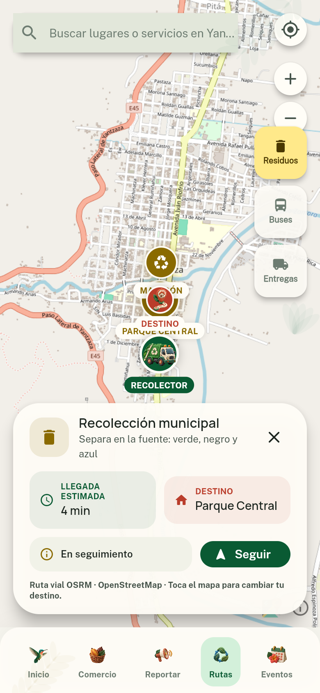
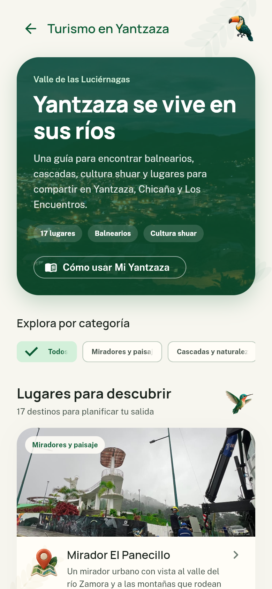

Una ciudad más cercana
Mi
Yantzaza
La ciudad que te escucha, te informa y te acompaña.
Una plataforma para acercar los servicios municipales a cada barrio, cada familia y cada visitante.
ServiciosParticipaciónTurismo
Una plataforma para acercar los servicios municipales a cada barrio, cada familia y cada visitante.

Servicios, novedades y propuestas para vivir mejor nuestra ciudad.


Reportes con categoría, descripción, evidencia fotográfica y ubicación exacta.


Consulta tus valores, elige una forma de pago y recibe tu comprobante.


Consulta el recorrido, el destino y el tiempo estimado de llegada.


Balnearios, cascadas, cultura shuar y emprendimientos locales desde una guía pensada para nuestra ciudad.
